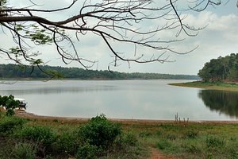

Sasthamkotta lake
Palaruvi falls

Jatayu Earth centre

Once known as Quilon, Kollam has a host of other attractions. People love visiting the Ashtamudi Backwaters along with the Thenmala Ecotourism Centre, Palaruvi Waterfalls, Jatayupara and Alumkadavu. The area is home to some of the most ornate temples built in traditional Kerala style. These are important relics of Kollam's glorious past. One can also go and relax at the nearby beaches, namely Kollam, Thirumullavaram and Thangasseri.